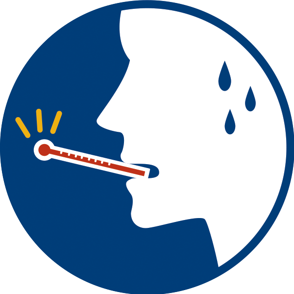
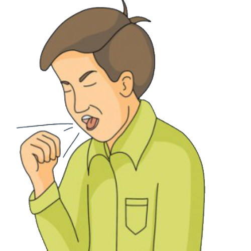
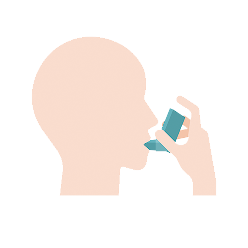

1. Latar Belakang
Wuhan adalah kota terbesar ketujuh di Tiongkok, dengan populasi lebih dari 11 juta orang. Kota ini merupakan pusat transportasi utama di Tiongkok bagian tengah, yang terletak sekitar 700 mil (1100 km) di sebelah selatan Beijing, 500 mil (800 km) di sebelah barat Shanghai, dan 600 mil (970 km) di sebelah utara Hong Kong. Bandar udara Wuhan memiliki penerbangan langsung ke berbagai kota besar di Eropa: enam kali penerbangan mingguan ke Paris, tiga kali ke London, dan lima kali ke Roma.
Dua puluh penerbangan terbanyak dari Wuhan sebelum terjadinya wabah.
Pada bulan Desember 2019, terjadi sekelompok kasus "radang paru-paru (pneumonia) yang tidak diketahui penyebabnya" yang dihubungkan dengan pasar grosir makanan laut Huanan. Pasar ini memiliki ribuan kios yang menjual berbagai hewan, seperti ikan, ayam, burung pegar, kelelawar, marmut, ular berbisa, rusa bintik, dan binatang liar lainnya. Setelah virus korona diketahui sebagai penyebab penyakit ini, kecurigaan pun muncul bahwa virus korona baru ini bersumber dari hewan.
Sebagian besar virus korona bersirkulasi di antara hewan, tetapi enam spesies di antaranya berevolusi dan mampu menginfeksi manusia, seperti yang terlihat pada sindrom pernapasan akut berat (SARS), sindrom pernapasan Timur Tengah (MERS), dan empat virus korona lain yang menyebabkan gejala pernapasan ringan seperti pilek. Keenamnya dapat menular dari manusia ke manusia.
2. Gejala Terjangkit Virus Corona
Demam

Demam merupakan gejala awal terinfeksi virus corona. Meskipun demam salah satu gejala dari berbagai kondisi kesehatan, namun perlu waspada. Demam ditandai dengan meningkatnya suhu tubuh lebih dari 38 derajat celcius. Sedangkan suhu normal manusia berkisar 36 hingga 37 derajat celcius.
Sebagian besar kasus virus corona mengalami gejala demam. Dilansir dari sebuah studi, hampir dari 140 pasien di Rumah Sakit Zhongan, Universitas Wuhan, gejala terpapar virus corona yakni sekitar 99% pasien mengalami demam. Sementara setengahnya, mengalami kelelahan, nyeri otot, kesulitan bernafas, dan batuk kering.
Batuk

Gejala awal lainnya yakni batuk. Penderita Covid-19 akan merasakan gejala batuk kering terus-menerus dan batuk berdahak. Batuk kering terjadi dalam waktu setengah hari. Batuk kering seperti sesuatu yang baru dirasakan oleh penderita. Artinya, batuk jenis baru ini berbeda dengan batuk yang dirasakan pada umumnya.
Sedangkan batuk kering berdahak juga menjadi gejala terpapar Covid-19. Meskipun tidak 100% menyatakan hal demikian, Namun, untuk mengantisipasi, kamu perlu waspada.
Sesak nafas

Covid-19 merupakan virus yang menyerang sistem pernafasan. Hal ini karena Covid-19 dapat menyebabkan gangguan pada sistem pernafasan dan pneumonia akut. Pasien yang terpapar Covid-19 akan mengalami kesulitan bernafas dan dada terasa sempit.
4. Pencegahan Virus Corona
>> Sesering mungkin cuci tangan
Cuci tangan dapat dilakukan sesering mungkin dengan durasi selama 20 detik. Pastikan seluruh bagian tangan tercuci bersih seperti di bagian sela-sela jari tangan, punggung tangan, dan pergelangan tangan.
>> Menjaga daya tahan tubuh
Menjaga daya tahan tubuh dapat dilakukan dengan mengonsumsi makanan yang sehat dan bergizi, seperti perbanyak sayuran hijau dan buah-buahan. Lakukan olahraga dan istirahat yang cukup, meminum air putih 8 gelas per hari.
>>Menghindari kontak dengan hewan yang berpotensi menularkan Covid-19
Sebelumnya, corona virus diduga berasal dari kelelawar dan disebarkan oleh beberapa hewan mamalia dan reptil. Selain itu, hindari untuk memakan daging dari hewan yang berpotensi menularkan.
>>Terapkan social distancing
Menjaga jarak dalam rangka menekan curva penyebaran virus corona. Hal ini bisa dilakukan dengan cara menjaga jarak minimal 1 meter dengan mereka yang batuk atau bersin.
>> Hindari menyentuh mata, hidung, dan mulut
Tangan menyentuh banyak benda maupun permukaan yang rawan terhadap virus. akibatnya virus bisa menempel jika anda tidak mencuci tangan terlebih dahulu.
>> Lakukan bersin dengan cara yang benar
Kamu dapat melakukan bersin atau batuk dengan cara menutupi hidung menggunakan siku tangan. Selain itu, anda dapat menggunakan tisu untuk menutup mulut anda.
>> Jaga kebersihan lingkungan
Bersihkan daerah-daerah yang sering digunakan untuk bersentuhan seperti: gagang pintu, tombol lift, kran air, pagar, dan toilet.